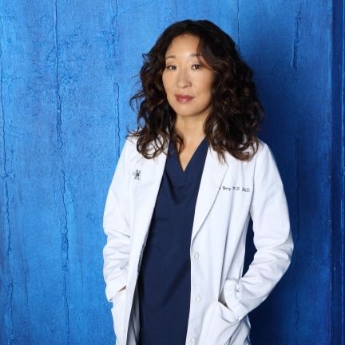

Mais do que uma série, é sobre pessoas.
Conheça os personagens, descubra curiosidades e teste seus conhecimentos sobre Grey's Anatomy, a série médica que está há mais de 20 anos no ar.
Criar contaCirurgiã geral

Cirurgiã cardiotorácica
Neurocirurgião
Cirurgiã geral
Cirurgião pediátrico
Chefe de cirurgia
Cirurgião plástico
Cirurgiã ortopédica
Cirurgiã geral
Cirurgiã de trauma
Cada paciente mostra uma forma diferente de enfrentar momentos difíceis.
Nenhuma cirurgia acontece sem a colaboração de várias pessoas.
Os personagens erram, perdem e mesmo assim seguem em frente.
A série mostra como os amigos podem se tornar uma família.
"Que dia lindo para salvar vidas."
Nunca assistiu ou já é fã? O quiz tem 3 níveis para todo mundo:
Para quem está conhecendo a série agora.
Para quem já conhece os personagens.
Para os fãs de verdade.